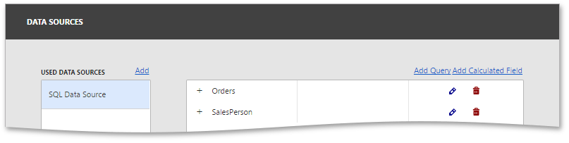

Dashboard Data Source Wizard
The Dashboard Data Source Wizard allows you to create a new data source or edit the existing data sources. To invoke this wizard, go to the Data Sources page of the dashboard menu and click the Add Query or Edit Query buttons.
The first page of the wizard allows you to create/edit a query or select a stored procedure. Click the Run Query Builder... button to launch the Query Builder, which allows you to choose the required tables/columns visually and displays the resulting SQL query within the SQL String editor. The image below displays a generated query.

If the SQL query contains query parameters, click Next to configure them.

Click Finish to create a new query. This query will be displayed in the field list.
